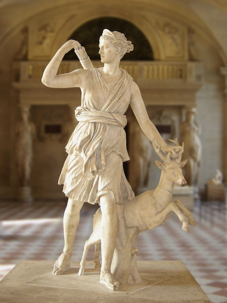
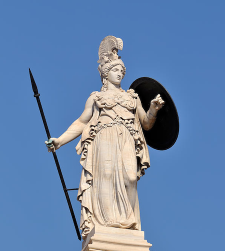

The Twelve Olympians were the principal deities of Greek mythology. Their name derives from the fact that they
lived on Mount Olympus, a medium-sized mountain in northern Greece. With Zeus as their king, they were worshiped
as the rulers of the cosmos. However, not all sources agreed on the identities of the Twelve Olympians. In some
traditions, the domestic goddess Hestia, one of the first generation of Olympians, gave up her seat to Dionysus
when he became a god. Because of this, there are actually thirteen gods who were counted.
The first generation of Olympians were children of the Titans Cronus and Rhea,
themselves early rulers of the cosmos. Eventually, Zeus and his siblings overthrew the Titans and made themselves the new gods. They continued to rule undefeated (though
not unchallenged) for the remainder of the Greek mythical period. The second generation of Olympians were mostly
offspring of Zeus and his siblings. They included Athena, goddess of wisdom, Ares, god of war, and the twins
Apollo and Artemis.
Artemis

- Roman Name: Diana
The wrath of Artemis was proverbial, for to it myth attributed wild nature’s hostility to humans. Yet Greek sculpture avoided Artemis’s unpitying anger as a motif. In fact, the goddess herself did not become popular as a subject in the great sculptural schools until the relatively gentle 4th-century-bce spirit prevailed.
Athena

- Epithet: Pallas
- Other Name(s): Athene
- Roman Name: Minerva
Athena was believed to have been born from the forehead of her father Zeus. In some versions of the story, Athena has no mother. Along with Aphrodite and Hera, Athena was one of the three goddesses whose feud resulted in the beginning of the Trojan War. She plays an active role in the Iliad, in which she assists the Achaeans and, in the Odyssey, she is the divine counselor to Odysseus. In the later writings of the Roman poet Ovid, Athena was said to have competed against the mortal Arachne in a weaving competition, afterward transforming Arachne into the first spider.
Zeus
- Roman Name: Jupiter
According to the Theogony, after Zeus reaches manhood, Cronus is made to disgorge the five children and the stone "by the stratagems of Gaia, but also by the skills and strength of Zeus", presumably in reverse order, vomiting out the stone first, then each of the five children in the opposite order to swallowing. Zeus then sets up the stone at Delphi, so that it may act as "a sign thenceforth and a marvel to mortal men". Zeus next frees the Cyclopes, who, in return, and out of gratitude, give him his thunderbolt, which had previously been hidden by Gaia. Then begins the Titanomachy, the war between the Olympians, led by Zeus, and the Titans, led by Cronus, for control of the universe. According to the Iliad, after the battle with the Titans, Zeus shares the world with his brothers, Poseidon and Hades, by drawing lots: Zeus receives the sky, Poseidon the sea, and Hades the underworld, with the earth and Olympus remaining common ground.